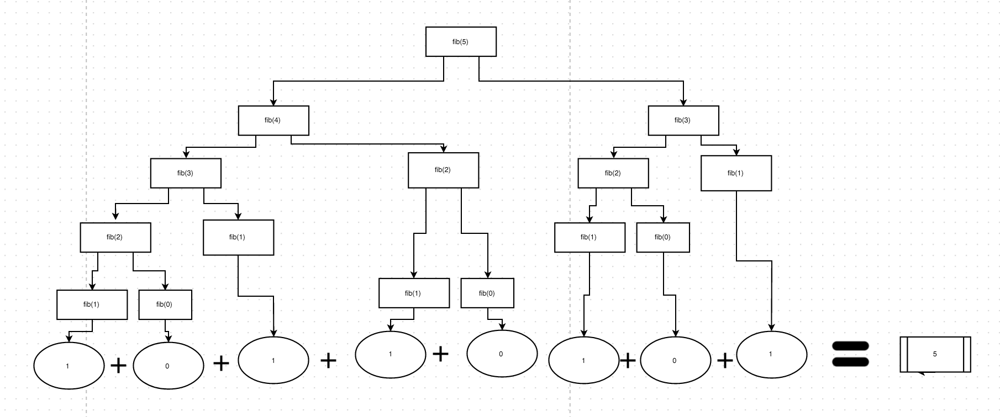

By definition, the first two numbers in the Fibonacci sequence are either 1 and 1, or 0 and 1, depending on the chosen starting point of the sequence, and each subsequent number is the sum of the previous two.
An example of the sequence can be seen as follows:
1 1 2 3 5 8 13 21 34 55 89 144 233 377 610 …
var looping = function(n) {
var a = 0, b = 1, f = 1;
for(var i = 2; i <= n; i++) {
f = a + b;
a = b;
b = f;
}
return f;
};
var recursive = function(n) {
if(n <= 2) {
return 1;
} else {
return this.recursive(n - 1) + this.recursive(n - 2);
}
};
